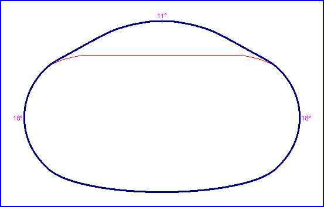

| Length | 1.500 Miles // 2.414 km |
| Direction | Anticlockwise |
Contact Information |
|
| Address |
Chicagoland Speedway 500 Speedway Blvd. Joliet IL 60433 |
| Telephone | +1 (1)815 7225500 |
| Website | http://www.chicagolandspeedway.com |
Chicagoland Speedway

| Length | 1.500 Miles // 2.414 km |
| Direction | Anticlockwise |
Contact Information |
|
| Address |
Chicagoland Speedway 500 Speedway Blvd. Joliet IL 60433 |
| Telephone | +1 (1)815 7225500 |
| Website | http://www.chicagolandspeedway.com |
Lasted Updated: 03 October 2004 16:38:17 GMT Daylight Time